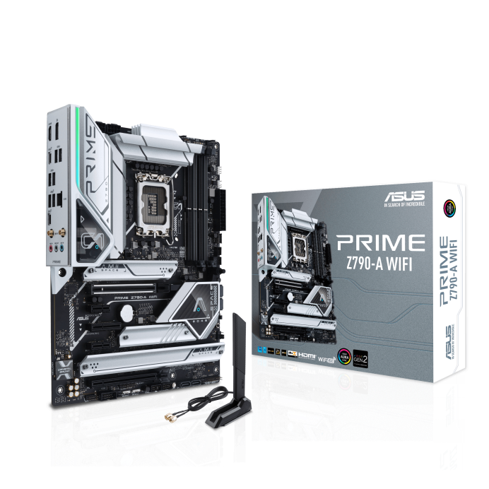
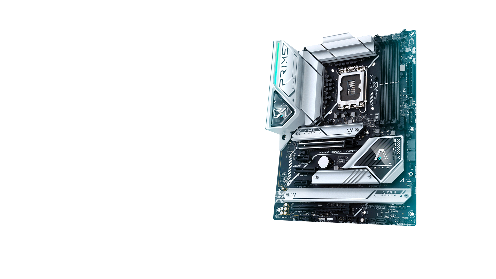

| ∣ | ∣ |
|
ASUS Prime Z790-A WIFI, an Intel Z790 LGA 1700 ATX motherboard with PCIe® 5.0, four M.2 slots, 16+1 DrMOS, DDR5, Intel WIFI 6E, 2.5 Gb LAN, HDMI®, DP, USB 3.2 Gen 2x2 Type-C®, front USB 3.2 Gen 2 Type-C®, Thunderbolt™ (USB4®) support connectors, chokes and durable capacitors for stable power delivery heatsinks, hybrid fan headers and Fan Xpert 4 Intel 2.5 Gb Ethernet, USB 3.2 Gen2x2 Type-C®, front panel USB 3.2 Gen 2 Type-C®, Thunderbolt™ (USB4®) header support, 4 PCIe® 4.0 M.2 Way AI Noise-Cancelation, ASUS Enhanced Memory Profile II and ASUS OptiMem II LED Core, and SafeSlot |  |
PRIME Z790-A WIFIASUS Prime series motherboards are expertly engineered to unleash the full potential of 13th Gen Intel® Core™ Processors. Boasting a robust power design, comprehensive cooling solutions and intelligent tuning options, PRIME Z790-A WIFI provides users and PC DIY builders with a range of performance optimizations via intuitive software and firmware features. |
|  |